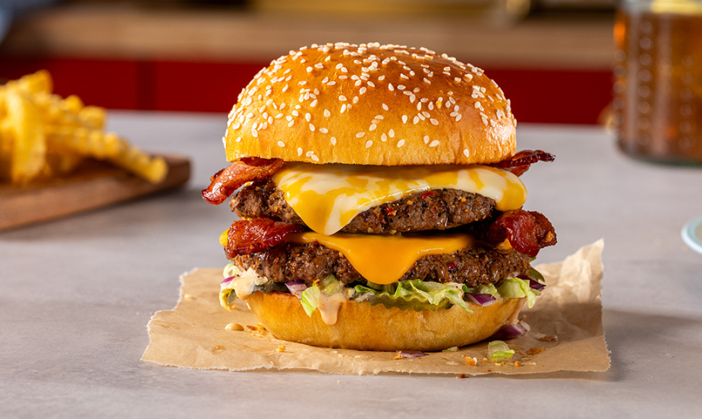

Home
Cheese Burger

Description
An American classic:The Cheese Burger! A favorite staple of BBQ, sporting,
and family gathering events. Whether you want it with fries or on the go,
cheeseburgers will always be a succulently viable option!
Ingredients
- 1 large egg
- ½ teaspoon salt
- ½ teaspoon ground black pepper
- 1 pound ground beef
- ½ cup fine dry bread crumbs
- 1 slice of American cheese
Steps
- Preheat an outdoor grill for high heat and lightly oil grate.
- Whisk egg, salt, and pepper together in a medium bowl.
- Add ground beef and bread crumbs; mix with your hands or a fork until well blended.
- Form into four 3/4-inch-thick patties.
- Place patties on the preheated grill. Cover and cook 6 to 8 minutes per side, or to desired doneness. An instant-read thermometer inserted into the center should read at least 160 degrees F (70 degrees C).
- Serve hot and enjoy!